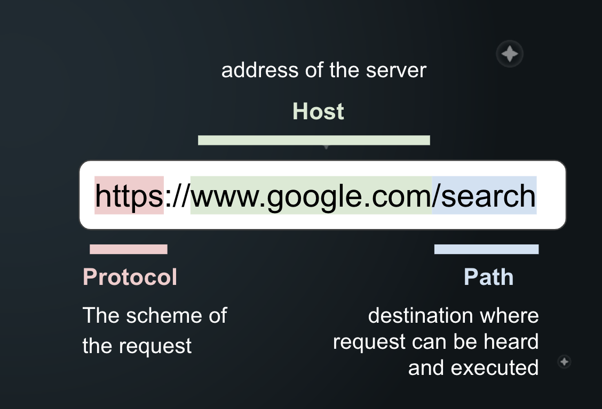

API Fundamentals
This collection is a companion to the Postman Classroom Program workshop API 101: API Fundamentals
What you will learn
- What are APIs?
- Servers & Clients
- Making HTTP requests to an API
- Understanding API responses
- Submitting data to APIs
- Using query parameters to refine requests
Resources
What's this API Thingy?
Application Programming Interfaces (APIs) allow services to communicate with each other.
An Analogy
We can think of an API as a waiter at a restaurant.

Imagine you go to your favorite restaurant and you want to order.
You, in this case, are the client. You are sending your requests through the waiter, who tells the kitchen what to make.
The waiter will come back with your food, or they may come back to tell you that the kitchen is out of what you ordered.
Regardless, the waiter serves as a mediator between you and the kitchen, and that’s what APIs do for clients and services.
Similiarly, in the Software World, we may need to get data from a service, like Google or Facebook. Since we don’t have access to those companies codebases, they create APIs so developers can get information from their services without access to the codebase.
Both developers and non-developers use APIs to get data from popular services like Twitter and Google to use in their own projects.
Software today has become more complex and collaborative over the years. Developers no longer need to create every service from scratch. Today you can find a suitable for nearly any kind of operation you might need.
some notable examples include:
- OpenWeatherMap: Allows you to get weather information of the place you input
- Discord: Create channels, manage bots and more
- Youtube-to-MP3
- Spotify: Get your playlist, get information about artists, albums, songs, see what's playing on your device Right Now.
- Twitter: Mange posts
- And so many more!
Clients and Servers

-
A client is the entity that makes a request to a server. Somes examples of clients are applications like web browsers.
-
A server controls resources and services. An API is the interface that exposes these resources + services to clients in a network.
The client can interact with an API by making requests over the network to the API. The API will then evaluate the request, perform the required operations, maybe interact with a database or other APIs, then send back a response to the client.
Postman is a client that allows you to make requests and view responses from servers.
Requests
- Requests are how we communicate with the API. You need three things to make an API request:
- Method (GET, POST, etc)
- Address/Endpoint (URL)
- Path
These elements let the API know what kind of request you’re making and where to send the request.
Below is a table of the methods that are most commonly used:
| Method | Action |
|---|---|
| GET | Retrieve information |
| POST | Send information |
| PUT/PATCH | Update information |
| DELETE | Delete information |
Below is an image showing more about Address and paths

Request Body
When send POST and PUT requests, the server will often expect data that it will process to complete your request, depending upon the API, it may ask for data in various types such as
- form data
- JSON
- text
- HTML
- XML
- files
- GraphQL
- … and more!
All of this can be specified under the "Body" tab in Postman (under the request)
Responses
When you make an API call, you will get a response value from the server. There are varoius types of responses but here are the most commone ones:
200 OKis usually the best response that the API works as 200 OK means Successful.201 Created400 Bad Request401 Unauthorized403 Forbidden404 Not found
Hands On
Brooklyn 99 API Reference

Base URL: b99.acm.org/api
GET Characters
URL: https://b99.acm.org/api/characters
Returns all characters in the database.
Optional filters can be passed as query parameters (see below)
| Query | Params | example |
|---|---|---|
| search | a search string to be matched against author/title (example: borges). Case insensitive, partial match OK. | Jake Peralta |
| designation | filter by genre (case-insensitive, exact match) | Detective |
| workplace | filter by genre (case-insensitive, exact match) | Brooklyn 99 |
| married | true/false | false |
| seasonFirstAppearedIn | integer | 1...9 |
example:
characters?filters[married][$eq]=true
characters?filters[name][$contains]=amy

GET character by id
URL: https://b99.acm.org/api/characters/:id
Get a single character by id
Replace the last part of path with the id of the character you would like to fetch.
/characters/:id
| Path | Variables |
|---|---|
| id | ZUST9JFx-Sd9X0k |
POST - add character
URL: https://b99.acm.org/api/characters
Adds a character
{
"name": "Jake Peralata",
"maritalStatus": "married",
"designation": "detective",
"workplace": "brooklyn 99",
"halloweenHeist": 1,
"seasonFirstAppearedIn": 1
}

PATCH - updates a character
URL: https://b99.acm.org/api/characters/:id
Updates a character by id
Update any of these fields for a characters with given id via the JSON body:
- name (string)
- maritalStatus (string)
- designation (string)
- workplace (string)
- halloweenHeist (integer)
| Path Variable | Value |
|---|---|
| id | ZUST9JFx-Sd9X0k |
Body
{
"designation": "south california"
}

DEL - delete a character
URL: https://b99.acm.org/characters/:id
| Path Variable | Value |
|---|---|
| id | ZUST9JFx-Sd9X0k |
Mission
Need to put some random mission here please You are at a training learning how to use the Brooklyn 99 API.
Before you start
- Check out the request documentation in the Brooklyn 99 API Reference folder to get familiar with the API and the types of requests you can make.
There are multiple ways to view documentation:
Click the three dots next a folder in the file explorer, then "View Documentation". This will show all the documentation for the whole collection. Navigate to a request and click the small file icon in the far-right menu
- Need help?
If you get stuck, search the Postman forums or post a new topic in the Training category if you don't see your question. Also, see these general troubleshooting tips.
- Check the Postman Console in the lower left
The Postman Console is a useful tool for debugging requests when you get errors, or you want to view logged data from your test scripts.
-
Hint: You will need to figure out a way to find the id of the joke you've just added. Take a look at the Brooklyn 99 API Reference - how can you find the new joke's id?
-
Instead of hard-coding the id in the request URL, set the id as a collection variable called newJokeId. This way you can reuse the same id in other requests like this: {{JokeId}}
-
To use your variable newJokeId as a path parameter in the request URL, include :newJokeId (with a colon in front) in your request URL. Then in the Params tab of the request you can specify the Value of the path parameter as your variable {{newJokeId}} (with double curly braces)
-
Be sure to save your variables!
-
Remember to use your collection variable {{newJokeId}} as the value for the path parameter :newJokeId in your request URL!
-
Be sure to save your request!
There are multiple people at here using the same API - don't be surprised if you see new Jokes appearing!

GET - view inventory
URL: https://b99.acm.org/api/jokes
POST - add a joke to the store
URL: https://b99.acm.org/api/jokes
Body:
{
"Joke": "The Pragmatic Programmer: From Journeyman to Master",
"author": "Andy Hunt, Dave Thomas",
"season": 1
}
GET - search jokes
URL: https://b99.acm.org/api/jokes?search=noice
| Query | Param |
|---|---|
| search | pragmatic |
PATCH - change author/season
URL: https://b99.acm.org/api/characters/:id
| Path Variable | Value |
|---|---|
| id | ZUST9JFx-Sd9X0k |
Body
{
"author": "me"
}
GET - get details for a single joke
URL: https://b99.acm.org/api/jokes/:id
| Path Variable | Value |
|---|---|
| id | ZUST9JFx-Sd9X0k |
DEL - delete the joke :(
URL: https://b99.acm.org/api/jokes/:id
| Path Variable | Value |
|---|---|
| id | ZUST9JFx-Sd9X0k |
Learning to read API documentation is a crucial skill when working with APIs. It is also important to get familiar with reading errors.
Play around with some requests and see if you can get the API to generate any errors
What happens when you:
- pass unrecognized parameters?
- hit an unrecognized endpoint?
- try to make a PUT request on a field you don't have permission to edit?
- try to add a joke with made-up fields in the body?
- try to delete the joke named "Ficciones" by Jorge Luis Borges?
- If you are interested in seeing the code behind this API, you can view it here.